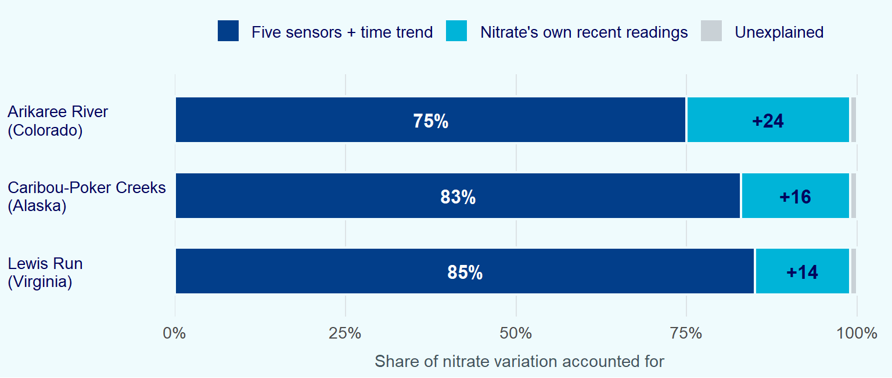

In 2018–19 records from three NEON river sites, five standard sensor readings accounted for 75% (Colorado), 83% (Alaska) and 85% (Virginia) of nitrate’s 15-minute variation, against 99% once models added nitrate’s own recent readings.
3 rivers
in Colorado, Alaska and Virginia, 2018–19, each needing its own model
75–85%
of nitrate's 15-minute variation accounted for by five routine sensors and a time trend
99%
once the models also used nitrate's own recent readings, which need a nitrate analyser
The results come from a study by Kermorvant et al. (2023), published in PLOS ONE, which modelled open data from the US National Ecological Observatory Network, known as NEON. In-stream nitrate analysers are expensive to buy and maintain, while probes for conductivity, dissolved oxygen, temperature, turbidity and water level are cheaper and already standard at many monitoring stations. If those routine readings move closely enough with nitrate, they could stand in for an analyser when it fails and help decide where analysers are needed most. The study set out to test that claim.
Routine sensors account for most of the work
The dark bars from Figure 1 carry the headline result about five routine readings, together with a smooth trend over time, reproduced more than three-quarters of nitrate’s movement at every site. The light segment is the comparison. Adding nitrate’s own readings from the previous few time steps lifted every model to 99%. But that information should be comprehend carefully, since it exists only where a nitrate analyser is already running. The gap between the dark bar and 99% is therefore what the routine sensors could not supply on their own: 24 percentage points at Arikaree, and 14 to 16 at the other two rivers.
Why the rivers rank differently
The ranking in Figure 1 follows how much of the signal the routine sensors carried at each site (Table 1). At Lewis Run all five readings pulled their weight: specific conductance carried the most, more than 15% of the explained variation by the authors’ importance measure, and each of the other four carried 11–14%. At Caribou-Poker Creeks conductance again led, at about 10%. At Arikaree no single sensor reached 5%, and nitrate’s own recent readings did roughly a quarter of the work.
The study does not point out a cause for Arikaree’s weaker fit. Two features of the site are plausible contributors are its nitrate is very low, with a median 35 times lower than at Lewis Run, and the river regularly stops flowing in summer, leaving a shorter and patchier record to learn from.
| Arikaree River Colorado |
Caribou-Poker Creeks Alaska |
Lewis Run Virginia |
|
|---|---|---|---|
| The sites | |||
| Setting | Semi-arid grassland and farmland | Subarctic taiga on permafrost | Pasture and woodland on an urban fringe |
| Flow | Intermittent; dries in summer | Perennial; iced over in winter | Perennial |
| Catchment area | 2,875 km² | 106 km² | 11.9 km² |
| Median nitrate (µmol/L) | 5.5 | 28.4 | 192 |
| Period modelled | Sep 2018 – Dec 2019 | Jun 2018 – Oct 2019 | Jan 2018 – Dec 2019 |
| What the models showed | |||
| Strongest single sensor | None above 5% | Conductance (about 10%) | Conductance (over 15%) |
| As water level rises, nitrate… | ↑ rises (at higher levels) | ↑ tends to rise | ↓ falls |
| As water warms, nitrate… | ↓ falls slightly | ↑ rises | ↑ rises |
The bottom rows of Table 1 explain the five sensors that were useful at one river were useful at all three, but the shape and even the direction of their relationships with nitrate changed. When the water level rose, nitrate tended to rise at Arikaree and Caribou-Poker Creeks but fall at Lewis Run. That pattern is consistent with storm water flushing nitrogen stored in dry soils at Arikaree, and with extra water diluting an already nitrate-rich stream at Lewis Run. Warmer water went with more nitrate in Alaska and Virginia, and slightly less in Colorado. A model fitted at one river would get these directions wrong at another, which is why the authors concluded that no single model was appropriate across the three sites.
Why it matters for river monitoring
Nitrate, mostly from fertiliser and wastewater, feeds algal blooms that can strip oxygen from rivers and coastal waters, and its level in drinking water is regulated. Much of a river’s nitrate can move in short pulses during storms and snowmelt, which a monthly grab sample can easily miss. Continuous optical sensors can catch those pulses, but they are costly to run (Rode et al. 2016).
Across a semi-arid river, a subarctic creek and a suburban stream, five routine sensors and a time trend accounted for 75–85% of nitrate’s 15-minute variation in 2018–19, and adding nitrate’s own recent readings took every model to 99%. Routine sensors can carry most of the load in tracking a pollutant that moves in pulses and is costly to measure directly. But what their readings mean changes from river to river, so the approach needs a local nitrate record to calibrate against before it can fill in for an analyser.
For in-situ monitoring managers
The study does not justify switching off nitrate analysers, but it does point to a cheaper way of using them:
- Pilot before changing the network. Pick two or three stations that already run a nitrate analyser alongside the routine sensors, fit a model for each, and check whether the 75–85% holds on your own rivers, ideally on a stretch of data the model has not seen.
- Use routine sensors to fill gaps, not to replace analysers. Where a local model holds up, it can estimate nitrate through analyser outages and maintenance downtime.
- Calibrate every river separately. The five-sensor list is a sound specification for new stations, but never borrow a fitted model from another river.
Study caveats
- The sensors had help from time. Each base model also included a smooth term for time, which captures seasonal patterns and slow trends. The 75–85% belongs to the five sensors and that trend together, not to the sensors alone.
- The records have gaps. Each site had two years of 15-minute timestamps, but summer drying at Arikaree and winter ice at Caribou-Poker Creeks, when sensors were removed, shortened the usable windows (Table 1). Sensor outages and screened-out anomalies left further gaps, and the paper does not report what share of readings was missing.
- These are associations, not causes. The study is observational. It shows that nitrate moves with conductance and water level, not that they drive it.
Source and methods
- Study. Kermorvant et al. (2023). The values in Figure 1 and Table 1 are taken from the research paper.
- Data. NEON aquatic sensor data for Arikaree River (Colorado), Caribou-Poker Creeks (Alaska) and Lewis Run (Virginia), January 2018 to December 2019, extracted by the authors on 29 January 2021 (NEON 2021). Nitrate was measured by a SUNA V2 ultraviolet sensor, each value the mean of 20 readings taken every 15 minutes. The other variables were matched to the nitrate timestamps.
- Variables. Specific conductance, dissolved oxygen, water temperature, turbidity (log scale) and surface water elevation, plus time. Conductivity, fDOM, pH and oxygen saturation were dropped because they were too closely correlated with the others, and chlorophyll-a was dropped for frequent anomalies.
- Model. One model per site. A generalised additive model with thin-plate spline smooths, with terms chosen by stepwise AIC, followed by an autoregressive moving-average (ARMA) model fitted to the residuals to handle the strong correlation between readings 15 minutes apart. Each sensor’s importance was assessed by model comparison.
AI Reference
- I ask AI mostly to help me with computer language: CSS and HTML to design the Website. I ask for the modification in
style.cssfile for Coolers theme and scientific font. - I also ask AI to help me navigate around navbar and website interaction, how files can interact to produce an intensive website. AI helped me to make the table so that it would convey the most information for blog readers.
- I need AI help for proofreading and reorganize my thoughts on the blog paper as well. I ask AI how to make the cards - like what PowerBI have - which contains crucial points of the report.
References
Kermorvant, Claire, Benoit Liquet, Guy Litt, et al. 2023. “Understanding Links Between Water-Quality Variables and Nitrate Concentration in Freshwater Streams Using High Frequency Sensor Data.” PLOS ONE 18 (6): e0287640. https://doi.org/10.1371/journal.pone.0287640.
NEON. 2021. Aquatic Instrument Data, NEON Data Portal (National Ecological Observatory Network). National Science Foundation. https://www.neonscience.org/data.
Rode, Michael, Andrew J. Wade, Matthew J. Cohen, et al. 2016. “Sensors in the Stream: The High-Frequency Wave of the Present.” Environmental Science & Technology 50 (19): 10297–307. https://doi.org/10.1021/acs.est.6b02155.